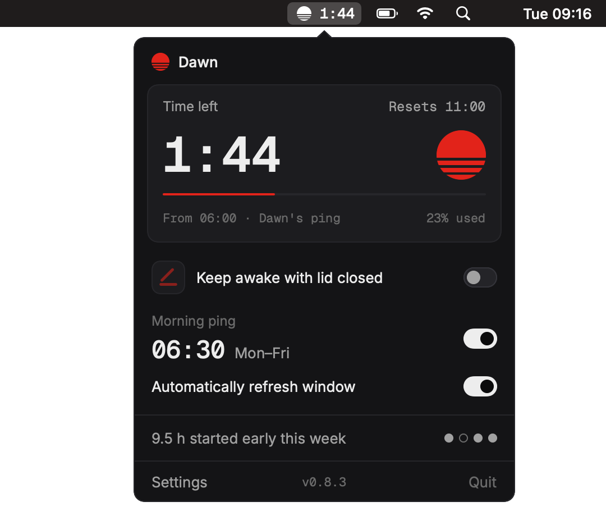
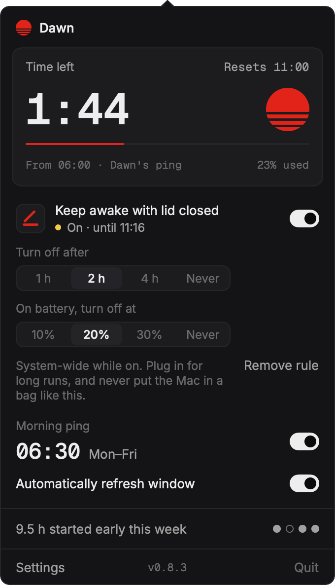
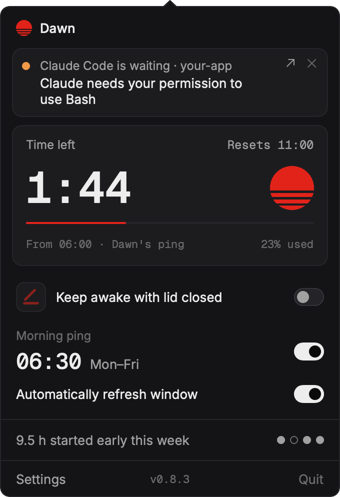

Your Claude window, already running when you sit down.
Claude's five-hour window starts with your first message. Dawn sends it early from your menu bar, through the official Claude Code CLI, so the window resets sooner in your day and a fresh one follows right after.

How it works
It moves the timing, not the limit.
You start at 09:00. Without Dawn your window opens then and resets at 14:00. With a 06:30 ping it's already two and a half hours in, resets at 11:30, and Auto refresh starts the next one a minute later.
Your weekly limit stays where Anthropic set it. Dawn only changes when each window starts.
What it does
A few small things, done quietly.
Morning ping
At the time and on the days you pick, Dawn wakes the Mac for a minute and sends one short message to the smallest model.
Auto refresh
A minute after each window resets, the next ping goes out, until the next morning. If the Mac is asleep, it goes when it wakes.
Countdown
Time left, reset time and share used, read from Claude Code's own /usage, which costs none of your limit.
Keep awake with the lid closed
One switch keeps long Claude Code runs going when you close the lid. It turns off after the time you pick, on low battery and when Dawn quits.
Claude Code alerts
An orange dot when Claude Code is waiting for you, a short sound when it's done. Click it to jump to that session.
Signed updates
Once a day Dawn checks GitHub. Update installs a new release only if it's signed with Dawn's key, and keeps your settings.


Privacy
Everything stays on your Mac.
Setup
Ready in a couple of minutes.
Install Dawn
Open Dawn.dmg and drag Dawn into Applications. It isn't notarized yet: the first time, click Open Anyway in System Settings › Privacy & Security.
Pick a time
In Settings, switch on the morning ping, pick a time and days, and let Dawn wake the Mac. Keep it plugged in and asleep, not shut down.
Start tomorrow with a head start.
Free, open source, and small enough to forget about.
Download for Mac